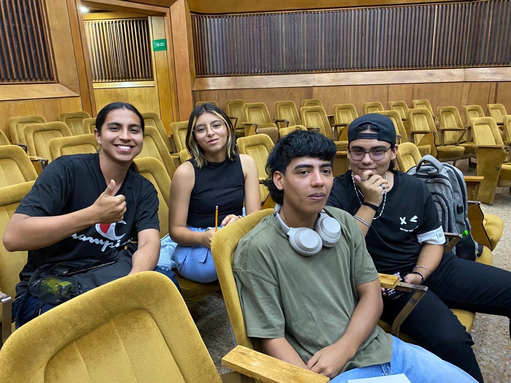
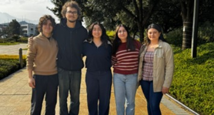
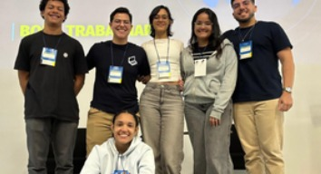
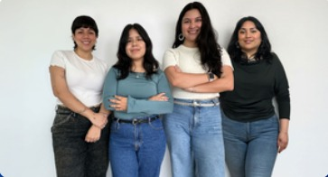
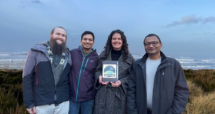
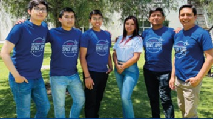

NASA Space Apps
Challenge Popayán
AESS Unicauca trabaja en la construcción de una nueva edición local del NASA
International Space Apps Challenge en Popayán:
un hackathon global que reúne
a personas de diferentes disciplinas para transformar datos abiertos de NASA y
sus agencias espaciales asociadas en soluciones a desafíos reales de la Tierra
y el espacio.
2020 Popayán ha hecho parte de la historia de Space Apps
conoce nuestro primer NASA →

Nos preparamos para una nueva edición en Popayán. Descubre cómo puedes ser parte de esta experiencia global como participante, voluntario, mentor, aliado o integrante del equipo organizador.
1 — REGÍSTRATE Y FORMA TU EQUIPO
Participa de manera individual o forma un equipo con personas de distintas disciplinas. No necesitas ser especialista en ciencias espaciales: Space Apps reúne perfiles de ciencia, ingeniería, programación, diseño, comunicación, negocios y muchas otras áreas.
2 — ELIGE UN CHALLENGE
Explora los desafíos oficiales de la edición y elige el que más te interese. Los challenges abordan problemáticas de la Tierra y el espacio y permiten trabajar con datos abiertos de NASA y sus agencias espaciales asociadas.
3 — CREA EN UN FIN DE SEMANA
Transforma una idea en una solución. Durante el hackathon podrás investigar, diseñar, programar, analizar datos y construir tu proyecto con el acompañamiento de mentores y del equipo organizador local.
4 — PRESENTA TU PROYECTO
Al finalizar, presenta tu solución en el evento NASA SPACE APPS CHALLENGE 2026 - Popayán, Cauca ante jueces locales y si tu proyecto es destacado podrá avanzar al proceso de evaluación global del NASA International Space Apps Challenge.
 Ganadores globales
Ganadores globales

Twisters
PureFlow
HerCode Space
Gaia+LEO
QUEÑARIS
¿Quieres conocer más proyectos que están transformando ideas en impacto?
Explora todos los
Global Winners 2025 ↗
en el sitio oficial del NASA Space Apps Challenge.